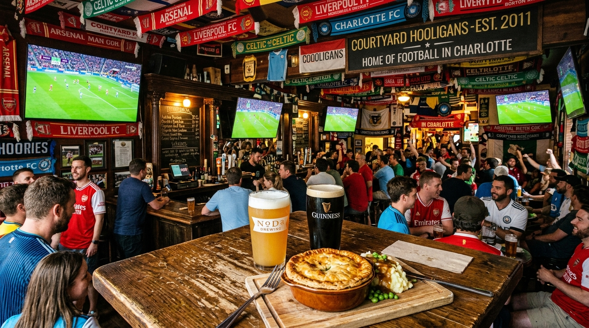

Live Global Match Broadcasts
Every Premier League kickoff, Champions League clash, Charlotte FC match, and World Cup tie broadcast live across multiple HD screens.
View Matchday Schedule →Charlotte's premier soccer bar at 140 Brevard Court in historic Brevard Court. Showing live Premier League, Champions League, MLS, & World Cup matches. Pouring 24+ craft draft beers, Guinness, and British savory meat pies.

Global soccer matches, cold craft pints, and authentic cobblestone courtyard atmosphere.
Every Premier League kickoff, Champions League clash, Charlotte FC match, and World Cup tie broadcast live across multiple HD screens.
View Matchday Schedule →Curated lineup of international stouts, Belgian dubbels, German lagers, local North Carolina IPAs, and perfectly poured Guinness.
Explore Taplist →Hot British beef & ale meat pies served with mashed potatoes & gravy, warm Bavarian soft pretzels, and grilled bratwursts.
View Pub Food Menu →